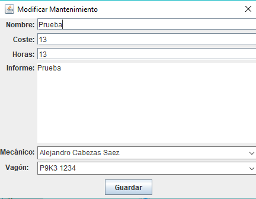

Para poder modificar campo deberemos pulsar en el botón "Modificar". Una vez pulsado,
nos saldrá la pantalla que veremos en la imagen de abajo.
En dicha imagen (al pulsar el botón en un campo de "Mantenimiento"), podremos cambiar cualquier dato del campo
seleccionado.
Una vez hagamos todo esto, pulsamos en el botón "Guardar" y se nos modificará cualquier dato del campo al
que quisieramos cambiar.
